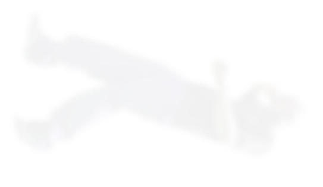
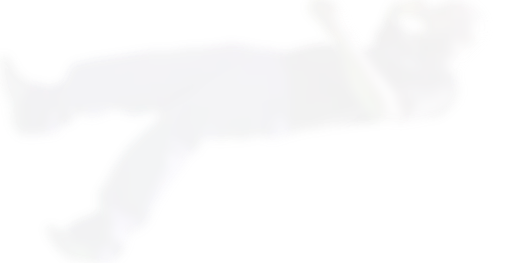
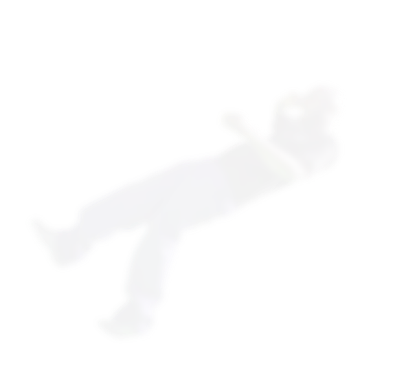
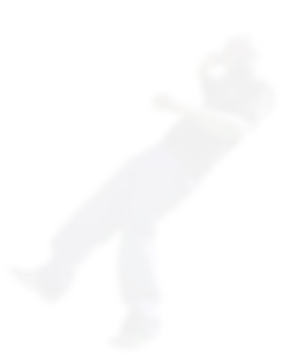
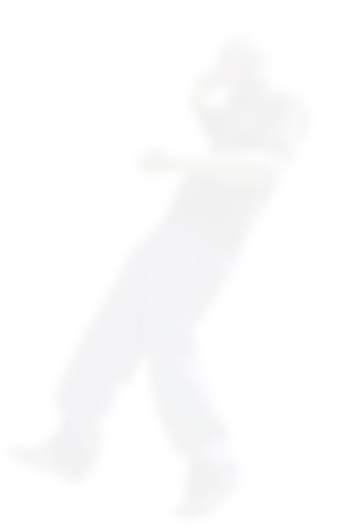

INTERVIEW


그것을 ‘일’이라고 부르지 말 것
“나는 항상 내 안의 열정을 따릅니다. 제 DNA에 박혀있는 것 같달까요.
열정을 따르면 그게 곧 당신의 직업이 고, 단 하루도 결코 허투루 보내지 않
을 겁니다. 건축가로서 일할 때,음악에 관심을 두고 친구를 위해 앨범 표지를 디자인했었죠. 나는 다른 어떤 것에 대해 단편적으로 혹은 다르게 생각하지 않습니다.
모든 것을 열린 마음으로 대하고 생각하죠. 그게 지금의 저를 만든 것 같고요. 멀티태스킹이 핵심이에요.”

모든 곳을 사무실로 활용할 것
“구태여 위치와 환경에 구애를 받지 말라는 소리입니다.
부지런히 움직여야 해요. 제 왓츠앱에 대화방만 약 30개예요.
휴대폰은 멀티태스킹을 위해 제작됐다고 생각해요.
덕분에 사무실 책상에 박혀있지 않아도 되죠. 그 어디에 있든 그곳은 당신의 사무실이
될 수 있습니다. ‘완충’된 휴대전화만 있다면요.”

적합한 사람들과 함께 일할 것
“나의 경우에는 같이 일하는 사람들을 볼 때 믿을만 한지 먼저 생각합니다.
‘백지장도 맞들면 낫다’라는 말을 전적으로 믿어요. 협업은 내 사무실의 모든
사람들에게 일어나며, 또 바깥으로 확장되죠. 나는 혼자라면 만들 수 없는 것을
만들 수 있는, 확실한 목소리를 가진 누군가를 항상 찾습니다.”
열심히 일하되 항상 지름길을 고려할 것
“확신하건대,지름길은 늘 우연히 발견하게 됩니다. 지름길은 삶을 살아가는 여러 방식
중 하나죠. 모든 사람들을 위한 지름길은 분명 있어요. 그러나 그것을 활용하는 건
당신이 그걸 충분히 인지할 수 있느냐에 달렸죠. 나는 우연의 일치가 중요하다고
믿지만, 이는 상호작용에 의한 것이라고 생각해요. 그러니까 당신은 그것을 잡기 위해
부지런히 움직여야 합니다. 당신이 열심히 일하고 최선을 다할 때,
자연스럽게 발전할 수 있을 거예요.”
